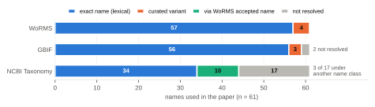

Background
Regional species inventories are a basic product of biodiversity research, and among the hardest to reuse. They are typically published as tables in a PDF: names in a column, localities as headers, and a legend of codes saying where each record comes from. That layout is efficient for a reader and opaque to software. It also fixes the taxonomy at the date of publication: when a name is later synonymised, the inventory cannot say so, and aggregators that ingest it later can only match the names it printed. The FAIR principles (Wilkinson et al. 2016) ask for data that are findable, accessible, interoperable and reusable by machines as well as people. For legacy inventories the gap between the published table and that goal is mostly data engineering: extraction, harmonisation, identifiers and provenance.
The community standards for closing this gap exist. Darwin Core (Wieczorek et al. 2012) provides the shared vocabulary for occurrences, taxa and locations, and Darwin-SW (Baskauf & Webb 2016) supplies the relationships between them that Darwin Core leaves undefined. Taxonomic authorities such as the World Register of Marine Species (WoRMS) (WoRMS Editorial Board 2026), the GBIF Backbone Taxonomy (GBIF Secretariat 2026) and NCBI Taxonomy (Schoch et al. 2020) provide persistent identifiers for names. The Environment Ontology (ENVO) (Buttigieg et al. 2013; Buttigieg et al. 2016) does the same for habitats. Mappings between local and external identifiers can be published with their justification and confidence using SSSOM (Matentzoglu et al. 2022), and provenance can be expressed with PROV-O (Lebo et al. 2013). Shape constraints in SHACL (Knublauch & Kontokostas 2017) can check the resulting graph. What is less often shown is how to apply these pieces together to one published inventory. The result should be reproducible and auditable, so that every statement in the graph can be traced back to the table cell it came from, and no value is invented in the process.
Here we take the inventory of shallow-water sea anemones (Actiniaria, Corallimorpharia, Ceriantharia and Zoanthidea) of Venezuela (González-Muñoz et al. 2016) as a test case. The article combines three kinds of evidence in 35 pages:
- a distribution matrix of 52 taxa across 27 localities, with codes for the authors' surveys, museum specimens and nine earlier publications;
- 128 specimens collected in the study;
- 84 specimens of the Museo Oceanológico Hermano Benigno Román (MOHBR) collection that the authors re-examined.
It is open access under CC BY 4.0, and its data are dedicated to the public domain (CC0).
Our aims were:
- to extract all of it from the published PDF without manual transcription;
- to harmonise it to a Darwin Core–aligned canonical model while keeping every value as published;
- to resolve names and habitats to persistent identifiers, recording how each match was made;
- to check data quality as code before building an RDF knowledge graph;
- to validate the graph with SHACL and query it with SPARQL;
and to make the whole process reproducible byte for byte (Fig. 1).

Fig. 1 The pipeline. Seven stages run from the published PDF to a queried knowledge graph. Two quality gates (orange) stop the run on a critical data-quality failure or a SHACL violation. Curated inputs (green) carry every correction that needed judgement, and the API cache makes identifier resolution reproducible.
Table 1 Sources of data in the article and records extracted from each
| Part of the article | Content | Extracted |
|---|---|---|
| Table 1 (pp. 3–10) | Presence matrix: taxa × localities; cell codes for evidence and new records; bold headers for sampled localities | 52 taxa, 27 localities, 344 codes in 263 cells |
| Table 2, Appendix 1 (pp. 26–28) | Specimens collected in the study: field code, MOHBR number, locality, state, coordinates | 128 specimens |
| Table 3, Appendix 2 (pp. 29–31) | MOHBR specimens re-examined: previous and current identification, date, collector | 84 specimens |
| Systematics (pp. 2–25) | Species accounts: name, authority, habitat paragraph | 26 accounts |
Methods
Source data
The publisher's PDF (González-Muñoz et al. 2016) is the only input. Its SHA-256 checksum is recorded in a manifest, and a test fails if the file changes. Table 1 lists the sources in the article and what was extracted from each.
Extraction
The tables have no column rules, so a line-based table finder cannot read them. Extraction works on word bounding boxes obtained with pdfplumber (Singer-Vine 2026):
- Columns are recovered from the gaps between header words. Words within a column header are separated by at most 3 pt, and columns by at least 6 pt.
- Rows are anchored on the row numbers printed in the margin.
- Bold headers in Table 1 are read from the font name; they mark the six localities sampled by the authors.
Table 1 is printed sideways and in two blocks of columns that repeat the same taxon rows. The parser requires the two blocks to agree on every taxon name. Extraction is verbatim: typing errors, impossible dates and blank cells are kept, and every row carries its page and a locator such as "Table 2, row 25".
The parser raises an error instead of guessing whenever:
- the sequence of row numbers breaks;
- a cell contains a code that is not in the legend;
- the number of columns is unexpected.
Three layout problems found during development became regression tests:
- a dagger set above the baseline created a duplicate row;
- a family authority overrunning into the first column was read as cell codes;
- raised prime marks reordered the coordinates.
Canonical model and harmonisation
The canonical model is written in LinkML (LinkML contributors 2026) as nine classes:
source document, reference, taxon, taxon-name variant, locality, occurrence, identification,
distribution assertion and habitat statement. Every slot that has a Darwin Core equivalent
declares it as slot_uri, and the schema is the single contract for column names, types,
required fields, patterns and permitted values. How each canonical field is produced is listed
in a source-to-canonical mapping table of 60 rows. Each row gives the source
column, canonical field, Darwin Core term and one of 25 named transformation rules.
A test keeps the table and the rule registry in the code identical in both directions.
Four modelling decisions matter for what follows.
Taxa are name usages. A taxon record is a name as used in the article, not today's accepted concept. External identifiers are attached later as mappings, so a name synonymised since 2016 stays visible.
Specimens and Table 1 assertions are kept apart. A code in Table 1 summarises evidence, some of it specimens that are also listed in Tables 2 and 3. Treating each code as an independent occurrence would count the same organism twice. Table 1 assertions therefore become their own records (Darwin Core basis of record MaterialCitation). The two sources are then compared during the data-quality checks instead of being merged.
Habitat belongs to the taxon. The article describes habitat in each species account, not per record, and copying it onto occurrences would invent per-record habitat.
Judgement is curated, not coded. Corrections that need judgement are rows in curated tables, each with its evidence and the date of the author's review. These cover:
- four misspellings of names in Table 2, e.g. Phymantus for Phymanthus;
- spelling variants of state names;
- 30 links from collecting sites to Table 1 localities. Three uncertain links were reviewed and deliberately left unlinked.
- collection dates stated only in the Methods of the article.
Values that cannot be harmonised become nulls, and the printed value is kept in a verbatim field. Examples are an impossible date ("31/04/2012"), a catalogue number "In progress", a current identification "not identified", and "–" for a missing locality.
Identifiers are deterministic UUIDv5 values derived from a natural key (catalogue number, name, locality) in a namespace derived from the article's DOI. Rebuilding therefore never changes an identifier.
Name resolution and habitat alignment
Each of the 61 names was looked up in WoRMS (WoRMS Editorial Board 2026), the GBIF Backbone Taxonomy (GBIF Secretariat 2026) and NCBI Taxonomy (Schoch et al. 2020). Every name receives one record per service, whether resolved or not, shaped after SSSOM (Matentzoglu et al. 2022): subject, predicate, object, justification, confidence, tool and date. The acceptance policy is the same for all services:
- Accepted: an exact name, unique within Cnidaria, at the same rank. The context filter reflects the scope of the article.
- Homonyms: where WoRMS holds several records for the same name, the record whose authority matches the authority printed in the article is kept.
- Fuzzy matches become candidates. They never become identifiers unless the author
accepts them in a curated file, which records the predicate and the evidence. Orthographic
variants, that is misspellings and the gender agreement of the epithet required by Article
34.2 of the Code (ICZN 1999), are linked with
skos:exactMatch(Miles & Bechhofer 2009) and the justification manual mapping curation. - Accepted names: for names that are not accepted, the record of the accepted name is retrieved as well, so both become nodes of the graph.
- NCBI fallback: if a name is absent from NCBI Taxonomy, its WoRMS accepted name is tried
and the link is recorded as
skos:closeMatch.
Confidence is 1 for exact matches and GBIF's own score for GBIF. For WoRMS fuzzy matches it is a fixed scale (phonetic 0.8; near_1 0.7; near_2 0.5; near_3 0.3). These values have no external basis: they only order candidates for review, and never accept anything on their own.
Habitat paragraphs were aligned to ENVO in two separate steps. First, a curated vocabulary of 13 phrases maps wording in the article to ENVO class labels; this is a human decision. Second, each label is resolved to an IRI through the EBI Ontology Lookup Service, by exact label only. A phrase preceded by a negation within a few words is recorded as negated and not annotated; for example, "but not intertidal zones" does not yield intertidal zone.
All 253 API responses (WoRMS 73, GBIF 61, NCBI 106, OLS 13; retrieved 24 November 2026) are cached and committed with the code. Each mapping cites the cached response it was derived from. In offline mode, as in continuous integration, no request leaves the machine, and a missing response becomes an unresolved record rather than a guess.
Data quality as code
Data quality is checked before any RDF is produced. Column-level checks are generated from the LinkML schema as pandera (Bantilan 2020) schemas, giving 269 checks of type, presence, uniqueness, pattern, permitted values and range. Because the same schema drives both, the contract and its enforcement cannot diverge.
Cross-table rules cover what a single column cannot. They are of two severities:
- 14 critical rules. These cover referential integrity, uniqueness of specimens and Table 1 assertions, exactly one current identification per specimen, coordinates given as a pair, new-record codes only on survey records, consistency of mappings, and closure of WoRMS accepted-name pointers. Any critical failure stops the pipeline.
- 11 warnings. These record incompleteness and disagreement between sources
without changing anything. Among them are four cross-source rules that compare Table 1 with
the specimen tables in both directions:
- each survey (*) or museum (a) code in Table 1 against the specimens of that taxon in that locality;
- each specimen against the Table 1 code that should list it.
Every rule returns the failing rows, not only a count, and every critical rule is tested against a deliberately injected fault.
Knowledge graph
The graph reuses existing vocabularies and mints a project term only where none fits.
- Occurrences, organisms, events, identifications and taxa use Darwin Core (Wieczorek et al. 2012). Darwin-SW (Baskauf & Webb 2016) links them: occurrence → event → location, occurrence → organism, identification → organism.
- Taxa are linked to external records with SKOS rather than
owl:sameAs, so that a name usage of 2016 is not merged with today's accepted name. - Each identifier link is also reified as an SSSOM mapping record. The record carries its justification (SEMAPV), confidence, request and date, and is derived from the cached response with PROV-O (Lebo et al. 2013).
- Every record is
prov:wasDerivedFromthe article's DOI. A qualified derivation gives the locator in the article, the page and the pipeline stage.
The 105 classes and properties the graph may use are listed in a term registry. Each is verified against a cached copy of the vocabulary that defines it, including the TDWG term lists, the Darwin-SW ontology, the SSSOM schema and SEMAPV. The graph builder refuses any term not in the registry. Checking the vocabularies changed three decisions:
- Each specimen has its own organism node, because
dsw:identifieshas the rangedwc:Organism. dwciri:toTaxonis used instead ofdsw:toTaxon, whose range would retype every taxon as a TDWG taxon concept.- ENVO substrates are separated from habitats using the recent
dwciri:substrateterm.
The project vocabulary is limited to 11 terms (Fig. 2). It covers, for example, the source locator, the new-record flag and an IRI-valued link to the accepted name. The graph was built with RDFLib (RDFLib Team 2026) and serialised as Turtle and JSON-LD.

Fig. 2 The data model, simplified. Specimens follow the Darwin-SW pattern (occurrence, event, location; occurrence, organism, identification). Names used in the article are linked to WoRMS, GBIF and NCBI records with SKOS, and each link is also reified as an SSSOM mapping record (not drawn). Every record derives from the article's DOI through a qualified PROV-O derivation that carries its table, row and page.
Validation, queries and endpoint
The graph is validated with SHACL (Knublauch & Kontokostas 2017) using pySHACL (Sommer 2026). There are 14 node shapes for cardinalities, datatypes, identifier formats and provenance. SHACL-SPARQL constraints cover rules that a property path cannot express, such as one current identification per organism, or a mapping record that must describe a SKOS triple asserted in the graph. Violations stop the pipeline; warnings mirror the data-quality warnings.
There are eight SPARQL queries (Harris & Seaborne 2013) over the graph and three SQL queries over the canonical tables in DuckDB (Raasveldt & Mühleisen 2019). Each SQL query must return exactly the rows of its SPARQL counterpart. The graph was also loaded into an Oxigraph SPARQL endpoint (Pellissier Tanon 2026) through the SPARQL 1.1 Graph Store Protocol. Every query was run through the SPARQL 1.1 Protocol and compared with the in-process results, which shows the queries are portable rather than specific to one engine.
Reproducibility
The pipeline is a Python 3.12 package with a locked environment. It runs as seven stages (Fig. 1), each logging its record counts in and out.
Continuous integration on every pull request runs:
- linting and the test suite;
- the pipeline offline, from the cached API responses;
- a check that every regenerated output is identical to the committed one;
- a Docker build that reruns the pipeline and the endpoint check.
An end-to-end test does the same locally into an empty directory. Development used one feature branch and one reviewed pull request per stage. Claude Code (Anthropic) was used as a coding and writing assistant; all curation decisions and results were reviewed by the author.
Results
Extraction and harmonisation
All parts of the article listed in Table 1 were extracted. The row counts match the numbers the article states: 128 collected and 84 examined specimens. Harmonisation produced the canonical tables in Table 2. No record was lost: every specimen became one occurrence, and every Table 1 code became one assertion. The only exception is the two codes for new records ("N"), which were merged into the survey assertion they qualify.
Table 2 Canonical tables and their Darwin Core or other standard counterpart. Specimens are PreservedSpecimen occurrences; Table 1 assertions are MaterialCitation occurrences; taxon mappings are one SSSOM row per name and service.
| Table | Standard | Rows |
|---|---|---|
| taxon (name usage) | dwc:Taxon | 61 |
| locality (26 areas, 45 sites) | dcterms:Location | 71 |
| occurrence (specimens) | dwc:Occurrence | 212 |
| identification (25 superseded) | dwc:Identification | 237 |
| distribution (Table 1) | dwc:Occurrence | 342 |
| habitat statement | dwc:habitat | 26 |
| taxon mapping | SSSOM | 183 |
Working through the article cell by cell brought to light problems that a reader would hardly notice:
- four misspelled names in Table 2;
- an impossible date in Table 3 ("31/04/2012");
- one missing state and two missing localities;
- three museum specimens whose identification "could not be corroborated";
- the same order named Zoanthidea in Table 1 and Zoantharia in the species accounts;
- Zoanthus pulchellus in Table 1 but Z. cf. pulchellus in its species account and in Table 2.
Coordinates exist only for the 17 collecting sites of Table 2, so no locality was geocoded. Collection dates were stated in the Methods of the article only for four of the sampled areas, so 59 of the 128 collected specimens carry a date. The remainder were left undated rather than assumed: the Isla de Cubagua material, for instance, was collected over several years (information from the present author, a co-author of the article), so no single date describes it.
Identifier resolution
WoRMS resolved all 61 names, GBIF 59 and NCBI Taxonomy 44 (Fig. 3, Table 3). WoRMS held more than one record for four of the names. For three of them, the authority printed in the article picked the right record. For example, Zoanthus sociatus (Ellis, 1768) was matched to the accepted record, not to a taxon inquirendum of the same name by Le Sueur (1818). The remaining name, Ceriantheomorphe brasiliensis, is printed without an authority, and both of its records point to the same accepted name, which the author confirmed.
The fuzzy candidates show why fuzzy matches are never accepted automatically. GBIF matched the historical label Palythoa caribbeorum to Palythoa caribbea, a different species, with a confidence of 0.98. The author rejected that match, while accepting WoRMS' phonetic match to P. caribaeorum. That acceptance is supported by Table 3 of the article itself, which lists the two names as the previous and the current identification of the same specimen.
All eight curated decisions (seven accepted, one rejected) are rows with evidence, and the pipeline fails if any of them is never used. Of the names absent from NCBI Taxonomy, ten could be linked through their WoRMS accepted name. The remaining 17 have no entry at all, which means no sequence data for those taxa can be linked by name.
Table 3 Identifier resolution of the 61 names per service. Curated: accepted by the author after review (included in Accepted). Via accepted: matched on the WoRMS accepted name (also included).
| Service | Accepted | Curated | Via accepted | Unresolved |
|---|---|---|---|---|
| WoRMS | 61 | 4 | – | 0 |
| GBIF | 59 | 3 | – | 2 |
| NCBI | 44 | 0 | 10 | 17 |

Fig. 3 Identifier resolution of the 61 names used in the
article, by service. Exact name: an automatic, unique match within Cnidaria at the same
rank. Curated variant: a fuzzy or ambiguous match accepted by the author with recorded
evidence. Via WoRMS accepted name: NCBI holds only the accepted name, linked as
skos:closeMatch. The counts are given in Table 3.
Linking each name to its WoRMS record shows how far the names in the inventory differ from current taxonomy. WoRMS gives a different accepted name for 16 of the names used in the article (Table 4). They fall into four groups:
- Seven names the article treats as valid. Examples are Parazoanthus parasiticus, now Umimayanthus parasiticus, and Corynactis caribbeorum, now Pseudocorynactis caribbeorum.
- Two names the article already marks as invalid.
- Three old museum labels that the authors themselves re-identified. One of them, Aiptasia pallida, is recorded by WoRMS as moved to a new genus by Grajales & Rodríguez (2014).
- Four differences of spelling only.
The inventory remains as published. The graph adds today's view next to it, with the date on which it was taken.
Table 4 Names used in the article whose accepted name in WoRMS differs (24 November 2026). Category: valid, treated as valid in the article; invalid, marked † in its Table 1; label, a previous identification on a MOHBR specimen; spelling, an orthographic variant only.
| Name in the article | WoRMS status | Accepted name | Category |
|---|---|---|---|
| Anthopleura cascaia | nomen nudum | Anthopleura correae | invalid |
| Zoanthus proteus | unaccepted | Zoanthus sociatus | invalid |
| Aiptasia pallida | unaccepted | Exaiptasia diaphana | label |
| Haliplanella luciae | unaccepted | Diadumene lineata | label |
| Lebrunia danae | unaccepted | Lebrunia neglecta | label |
| Bunodosoma cavernata | unaccepted | Bunodosoma cavernatum | spelling |
| Ceriantheopsis americanus | accepted | Ceriantheopsis americana | spelling |
| Homostichantus duerdenii | accepted | Homostichanthus duerdeni | spelling |
| Palythoa caribbeorum | accepted | Palythoa caribaeorum | spelling |
| Corynactis caribbeorum | unaccepted | Pseudocorynactis caribbeorum | valid |
| Epizoanthus cutressi | unaccepted | Bergia cutressi | valid |
| Exaiptasia pallida | alternative representation | Exaiptasia diaphana | valid |
| Isaurus duchassaingi | unaccepted | Isaurus tuberculatus | valid |
| Parazoanthus catenularis | unaccepted | Bergia catenularis | valid |
| Parazoanthus parasiticus | unaccepted | Umimayanthus parasiticus | valid |
| Parazoanthus puertoricense | unaccepted | Bergia puertoricense | valid |
Habitat alignment produced 49 ENVO annotations with 11 distinct classes, covering 24 of the 26 habitat statements. The two negated phrases were correctly left unannotated. Coral rubble, a substrate named in 14 species accounts, has no ENVO class, and biotic substrates (sponges, hermit-crab shells, seagrass leaves) were not mapped. Both gaps are reported as such rather than approximated.
Data quality
The canonical tables passed all 269 column-level checks and all 14 critical rules. Of the 11 warnings, 10 reported a total of 46 rows (Table 5). The gaps in completeness are those of the source.
The cross-source warnings turned out to be the most informative result:
- Survey codes without vouchers. 13 survey codes in Table 1 have no collected specimen of that taxon at that locality. They may rest on observations or photographs, since the authors photographed specimens in situ, but the article does not say, so the graph keeps them as published and flags them.
- Museum codes for identifications the authors revised. Table 1 records a MOHBR specimen (code "a") of Homostichanthus duerdeni at Playa Azul, Litoral Central. The only MOHBR specimen from that locality under that original label is now identified as Actinoporus elegans (Table 3, row 26).
- Museum codes for identifications the authors could not confirm. Table 1 likewise keeps code "a" for Palythoa variabilis at Morrocoy and Diadumene lineata at Golfo de Paria, whose specimens the article lists as not identified.
In other words, the distribution matrix partly reflects identifications that the same article revised or could not confirm. Only a check across the three tables reveals this.
Table 5 Data-quality warnings that reported rows (no critical rule failed)
| Rule | Description | Rows |
|---|---|---|
| W01 | Verbatim date that is not a valid calendar date | 1 |
| W02 | Occurrence without locality ('-' in the source) | 2 |
| W03 | Specimen whose current identification has no taxon | 3 |
| W04 | Specimen without a MOHBR catalogue number | 1 |
| W05 | Collecting site not linked to a Table 1 area | 4 |
| W07 | Habitat statement with no ENVO annotation | 2 |
| W08 | Table 1 '*' (this survey) in a sampled area, but no Table 2 specimen of that taxon there | 13 |
| W09 | Table 2 specimen in an area, but no Table 1 '*' for that taxon and area | 7 |
| W10 | Table 1 'a' (MOHBR) in an area, but no Table 3 specimen of that taxon there | 5 |
| W11 | Table 3 specimen in an area, but no Table 1 'a' for that taxon and area | 8 |
Knowledge graph, validation and queries
The graph contains 20,242 triples about 3,216 subjects:
- 554 occurrences (212 specimens and 342 Table 1 assertions);
- 237 identifications;
- 128 taxa (61 name usages from the article and 67 WoRMS records);
- 164 SSSOM mapping records;
- 963 qualified derivations, one for every record derived from the article.
It conforms to all 14 shapes, with no violations. The nine warnings and the one information result restate the gaps of the source. To show that the shapes work, a copy of the graph with twelve independent faults injected was validated in the tests, and each fault was reported on the right node. Provenance can be queried end to end. For specimen MOHBR I-547, one query returns its origin in the article (Table 3, row 2, p. 29). For each of its three identifier links, it also returns the service, the predicate, the justification, the confidence, the request URL and the time of retrieval. All eight SPARQL queries returned identical rows on RDFLib and on the Oxigraph endpoint, and each SQL query returned the same rows as its SPARQL counterpart. One query (Fig. 4) shows how much of the known distribution rests on second-hand evidence. Records from earlier literature make up 227 of the 340 Table 1 assertions that have a locality (67%; the two open-sea assertions have none), and they outnumber the authors' own survey records in every coastal region. Of all 344 codes, 207 (60%) cite a single monograph (Agudo 1987).

Fig. 4 Presence records of Table 1 of the article by coastal region and kind of evidence: the authors' survey (code *), a specimen in the MOHBR collection (a), or an earlier publication (b–j). The values are printed on the bars. Records were computed with SPARQL query q07 over the graph.
Discussion
Keeping the publication intact. The central design choice was to treat the article as data
to be preserved, not as text to be corrected. Names are kept as name usages and linked to
current records with SKOS and SSSOM rather than replaced. The 2016 inventory and today's
taxonomy therefore coexist in one graph, each with its own provenance, and the drift between
them can be queried (Table 4). An owl:sameAs link would have merged a synonym with its
accepted name and lost exactly that distinction. Likewise, keeping the specimen tables apart
from the distribution matrix is what made the cross-source checks possible. Those checks
exposed codes in Table 1 that reflect identifications the authors later revised.
Judgement where it is needed, code everywhere else. Most of the work is deterministic and tested: extraction, rule-based harmonisation, exact matching, validation. A small number of decisions need expertise, such as whether a misspelled museum label denotes a given species, whether two names differ only in gender agreement, or whether a collecting site belongs to a locality of Table 1. Here all such decisions, including the habitat vocabulary, fill 71 rows in six curated files. Keeping them as data rather than code has three effects:
- each decision carries its evidence and the date it was reviewed;
- a decision that no longer applies is detected, because the pipeline fails on an unused override;
- the line between what the machine asserted and what a person asserted is explicit, encoded in the mapping justification (lexical matching or manual curation).
The same design would admit machine-learning or language-model assistance safely. Such a model could propose candidates for curation, but only the existing gates (curated files, schema checks and shapes) could turn a proposal into an assertion.
What the inventory rests on. The graph makes explicit how much of the Venezuelan distribution data depend on a single source from 1987 (Agudo 1987). This is not a criticism of the article, which states its sources in the legend. It is the kind of dependency that is invisible in a PDF, and it matters when the inventory is reused, for instance in species distribution models or regional red-list assessments. The differences in taxonomy point the same way: WoRMS now places three species that the article lists under Parazoanthus in other genera (Bergia, Umimayanthus), and treats Exaiptasia pallida as an alternative representation of E. diaphana. A reuser who matched the printed names against a current checklist would silently drop or misplace these records.
Limitations. Five limitations apply.
- One article. The parser relies on the layout of this article. It refuses unexpected layouts rather than guessing, but another article needs its own column and row rules.
- Habitat per species. Habitat is attached to species, as the article reports it, and ENVO coverage of reef substrates is incomplete.
- Heuristic confidence. The confidence values for fuzzy matches are a heuristic, used only to order candidates for review.
- Placeholder namespaces. The namespaces are not yet registered, so the graph's IRIs do not dereference.
- A dated snapshot. Resolution reflects the external services on the retrieval date. Refreshing is deliberate, by renewing the cache, and the changes appear as differences in the committed mappings.
Next steps. Several extensions follow directly from the model:
- Later morphological data on the same specimens, such as cnidae measurements of Condylactis gigantea, can be added as Darwin Core measurements on the existing occurrences, joined through the same identifiers.
- The canonical tables already follow Darwin Core, so they can be published to GBIF as a Darwin Core Archive.
- Re-running the resolution periodically would turn Table 4 into a record of taxonomic change.
Conclusions
A species inventory published as a PDF can be made machine-actionable without rewriting it. In this case:
- every one of the 344 distribution codes and 212 specimen records is traceable to its page, table and row;
- every identifier link records how, when and by whom it was made;
- the resulting graph is validated with SHACL, queryable with SPARQL, and reproducible byte for byte.
The process revealed that seven names the article treats as valid now have a different accepted name, inconsistencies between the article's own tables, and the article's dependence on a single earlier monograph. All of these are useful to anyone reusing the inventory, and none is visible in the PDF. The approach relies on community standards, open software and explicit curation, and transfers to other legacy inventories.
Abbreviations
DwC: Darwin Core; ENVO: Environment Ontology; GBIF: Global Biodiversity Information Facility; IRI: Internationalised Resource Identifier; LSID: Life Science Identifier; MOHBR: Museo Oceanológico Hermano Benigno Román; NCBI: National Center for Biotechnology Information; OLS: Ontology Lookup Service; PROV-O: PROV Ontology; RDF: Resource Description Framework; SHACL: Shapes Constraint Language; SKOS: Simple Knowledge Organization System; SSSOM: Simple Standard for Sharing Ontological Mappings; WoRMS: World Register of Marine Species.
Declarations
Ethics approval and consent to participate
Not applicable.
Consent for publication
Not applicable.
Availability of data and materials
The code, curated mappings, cached API responses, canonical tables, knowledge graph (Turtle and JSON-LD), SHACL shapes, queries and all reports are available at https://github.com/carlosehortiz-hub/Sea-anemones. The derived data are released under CC0 1.0 and the code under the MIT licence. The source article is available under CC BY 4.0 at https://doi.org/10.1186/s41200-016-0016-7.
Competing interests
The author declares no competing interests.
Funding
This work received no specific funding.
Authors' contributions
CO designed the study, curated all decisions that required taxonomic judgement, and wrote the manuscript.
Acknowledgements
The author thanks the authors of González-Muñoz et al. (2016) for publishing the inventory openly.
References
Agudo I. Contribución al conocimiento de la actinofauna de Venezuela (Anthozoa: Ceriantipatharia y Zoantharia). Caracas: Proyecto Taxonomía, Ecología, Zoogeografía y Toxicología de la Actinofauna de Venezuela; 1987. As cited in González-Muñoz et al. (2016).
Bantilan N. pandera: statistical data validation of pandas dataframes. Proceedings of the 19th Python in Science Conference. 2020:116–124. doi:10.25080/majora-342d178e-010.
Baskauf SJ, Webb CO. Darwin-SW: Darwin Core-based terms for expressing biodiversity data as RDF. Semantic Web. 2016;7:629–643. doi:10.3233/SW-150203.
Buttigieg PL, Morrison N, Smith B, Mungall CJ, Lewis SE, ENVO Consortium. The environment ontology: contextualising biological and biomedical entities. J Biomed Semantics. 2013;4:43. doi:10.1186/2041-1480-4-43.
Buttigieg PL, Pafilis E, Lewis SE, Schildhauer MP, Walls RL, Mungall CJ. The environment ontology in 2016: bridging domains with increased scope, semantic density, and interoperation. J Biomed Semantics. 2016;7:57. doi:10.1186/s13326-016-0097-6.
GBIF Secretariat. GBIF Backbone Taxonomy, species match API. 2026. https://api.gbif.org/v1/species/match. Accessed 24 November 2026.
González-Muñoz R, Simões N, Guerra-Castro EJ, Hernández-Ortíz C, Carrasquel G, Mendez E, Lira C, Rada M, Hernández I, Pauls SM, Croquer A, Cruz-Motta JJ. Sea anemones (Cnidaria: Actiniaria, Corallimorpharia, Ceriantharia, Zoanthidea) from marine shallow-water environments in Venezuela: new records and an updated inventory. Mar Biodivers Rec. 2016;9:18. doi:10.1186/s41200-016-0016-7.
Grajales A, Rodríguez E. Morphological revision of the genus Aiptasia and the family Aiptasiidae (Cnidaria, Actiniaria, Metridioidea). Zootaxa. 2014;3826:55–100. doi:10.11646/zootaxa.3826.1.2.
Harris S, Seaborne A. SPARQL 1.1 Query Language. W3C Recommendation. 2013. https://www.w3.org/TR/sparql11-query/.
International Commission on Zoological Nomenclature. International Code of Zoological Nomenclature. 4th ed. London: International Trust for Zoological Nomenclature; 1999.
Knublauch H, Kontokostas D. Shapes Constraint Language (SHACL). W3C Recommendation. 2017. https://www.w3.org/TR/shacl/.
Lebo T, Sahoo S, McGuinness D. PROV-O: The PROV Ontology. W3C Recommendation. 2013. https://www.w3.org/TR/prov-o/.
LinkML contributors. LinkML: the Linked Data Modeling Language (linkml-runtime 1.12.1). 2026. https://linkml.io.
Matentzoglu N, Balhoff JP, Bello SM, et al. A Simple Standard for Sharing Ontological Mappings (SSSOM). Database (Oxford). 2022;2022:baac035. doi:10.1093/database/baac035.
Miles A, Bechhofer S. SKOS Simple Knowledge Organization System Reference. W3C Recommendation. 2009. https://www.w3.org/TR/skos-reference/.
Pellissier Tanon T. Oxigraph: a SPARQL graph database (version 0.5.13). 2026. https://github.com/oxigraph/oxigraph.
Raasveldt M, Mühleisen H. DuckDB: an embeddable analytical database. Proceedings of the 2019 International Conference on Management of Data (SIGMOD). 2019:1981–1984. doi:10.1145/3299869.3320212.
RDFLib Team. RDFLib: a Python library for working with RDF (version 7.6.0). 2026. https://github.com/RDFLib/rdflib.
Schoch CL, Ciufo S, Domrachev M, et al. NCBI Taxonomy: a comprehensive update on curation, resources and tools. Database (Oxford). 2020;2020:baaa062. doi:10.1093/database/baaa062.
Singer-Vine J, The pdfplumber contributors. pdfplumber (version 0.11.11). 2026. https://github.com/jsvine/pdfplumber.
Sommer A. pySHACL: a Python validator for SHACL (version 0.40.2). 2026. https://github.com/RDFLib/pySHACL.
Wieczorek J, Bloom D, Guralnick R, Blum S, Döring M, Giovanni R, Robertson T, Vieglais D. Darwin Core: an evolving community-developed biodiversity data standard. PLoS One. 2012;7:e29715. doi:10.1371/journal.pone.0029715.
Wilkinson MD, Dumontier M, Aalbersberg IJ, et al. The FAIR Guiding Principles for scientific data management and stewardship. Sci Data. 2016;3:160018. doi:10.1038/sdata.2016.18.
WoRMS Editorial Board. World Register of Marine Species. 2026. https://www.marinespecies.org. REST API accessed 24 November 2026.